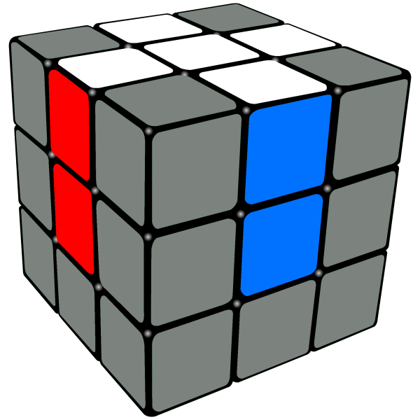
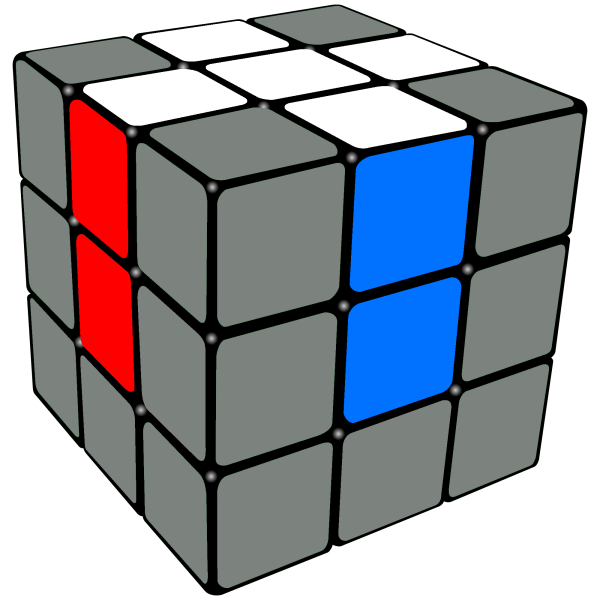

Before we get into the cross:
To make the cross, you need to have good logic.
Key Words: Edge Piece, Corner Piece, Center Piece
A corner piece is a piece that has 3 colors. (in the corner)
An edge piece is a piece that has 2 colors. (in the edge)
A center piece is the piece with one color. (in the center)
GOLDEN RULE: Pieces never change color, they just change position!
To make the cross, you need to align all the edge pieces with their corresponding center pieces.
Example: The white;red edge needs to be touching both the red center and the white center at the same time!
You have to do it for every edge piece with white on it.
 
